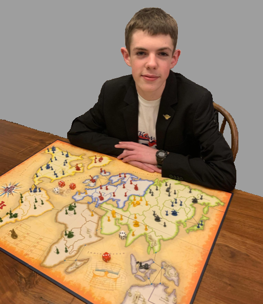

About Us
Founded in 2021 by Conor Rom, Mana Rock Gaming is a small organization located in South Carolina, with the mission of making South Carolina the Gaming Capital of America. We believe that by spreading the joy and availability of board/video games to others, we can improve lives for the better. Mana Rock Gaming worked with the Kershaw County Library help set up a small board game collection at the Elgin Library. We are also developing our own video games and board games. Bastion of Antiquity Explore is our first mobile release to provide an scavenger hunt experience to learn about the Citadel, the Military College of South Carolina.
About Conor Rom
Conor Rom is the founder of Mana Rock Gaming. Conor is an Freshmen attending the Citadel, with hopes of achieving a degree in accountanting. Conor Rom has experience in website and video game coding, investing, and 3D printing. His favorite board games are Axis & Allies, Risk, Catan, & Viking Chess. He also enjoys playing Dungeons and Dragons with friends, and is a collector of the miniature wargames; Warhammer 40K, Bolt Action, and Star Wars Armada. Conor also collects Magic the Gathering trading cards, with his favorite decks being Blue/Green Mid-Range and Red Goblin Aggro. While his favor video games are Star Wars Empire At War & Hearts of Iron 4.
|

|